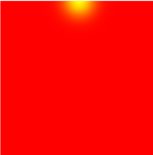
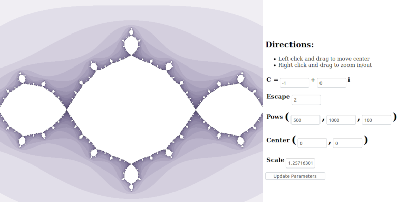
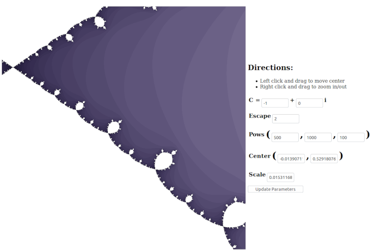

Mini Assignment 3: Shaders (30 Points)
Due Wednesday 10/2/2019 at 11:59PM
Overview
The purpose of this assignment is to familiarize students with the the GLSL programming paradigms, particularly vertex and fragment shaders. This will be the final warmup assignment before the first large scale asssignment on ray tracing.
Getting Started
- Click here to download the repository of skeleton code for this assignment.
- If you haven't already, follow the directions to get the local Python web server working on your computer (click here to see these directions in the last assignment).
Submission Instructions
You will submit all of your fragment shaders to Canvas when you are finished. Please also submit aREADME.txt file with both submissions with the following information each time:
- Your name
- One of the two statements below
- "I consent to have my art contest submission posted publicly on the class web site. My name/pseudonym for public display is .
- "I do not wish to post my art contest submission publicly"
- Approximately how many hours it took you to finish this assignment (I will not judge you for this at all...I am simply using it to gauge if the assignments are too easy or hard)
- Your overall impression of the assignment. Did you love it, hate it, or were you neutral? One word answers are fine, but if you have any suggestions for the future let me know.
- Any other concerns that you have.
General Tips:
- Write your shaders one step at a time! Debugging is very difficult because the only output is a color per pixel. Try to use the colors to help you debug.
- If your shader doesn't compile, drop into the debugging console to see why. Syntax error messages will be printed there with line numbers in the shader.
-
If your shader doesn't update, you may need to do a "hard refresh" and reset your cache. This seems to happen particularly in Google Chrome. The keyboard shortcut for this is
CTRL+SHIFT+R -
If you get an error like the following
Then it probably means you need to write a number as a decimal. There is no explicit casting, so when GLSL seesERROR: 0:15: '+' : wrong operand types - no operation '+' exists that takes a left-hand operand of type 'const int' and a right operand of type 'mediump float' (or there is no acceptable conversion)10, for instance, it assumes it's an integer. So you would need to write10.0
Task 1: Rise N' Shine (10 Points)
Create an animation of a sun that starts on the left hand side of the screen and moves in a semicircular arc across the screen to the right hand side. When it's at the left or right side, the background should be dark. When it reaches its peak at the center of the screen, it should be lighter. When it reaches its minimum at the right hand side of the screen, it should restart on the left. More specifically:
- The uniform variable
uTimeholds the elapsed time since the beginning of the simulation. You should make a circle with sines and cosines of this variable. - The green channel of the output pixel should be
\[ e^{-dR^2/r^2} \]
wheredRis the distance of the pixel to the center of the disc, andris the radius of the disc. - The red channel should be a sine wave that starts at zero and reaches its peak at 1, and then ends at zero before it's reset.
circle.frag for this task. You do not need to touch the vertex shader or HTML fileGui Tester:
circle.html- The function for raising
eto a power in GLSL isexp -
Be careful when defining vector in GLSL. This is a valid line of code
vec2 x = vec2(1.0, 3.0);
This is not a valid line of code
vec2 x = (1.0, 3.0);
You will get some confusing error messages at compile time if you do the latter. - Since you're only going through a semicircle and it resets each time, you will need to set a variable that's equal to the remainder of the uniform time divided by PI. Since the modulus % operator doesn't exist, you should use the
floor()function instead.
Screenshots of A Working Implementation
|  |
Task 2: Julia Sets (15 Points)
A fractal is an object which is "self-similar," possibly across an infinite amount of rescaling. Roughly, what this means is if we zoom in on the shape, we will see the shape repeated. Or in other words, the shape is made up of itself.
One kind of fractal emerges when we consider the behavior of the following recursive equation\[ z_{n+1} = z_n^2 + c \]
where zn, zn+1, and c are all complex numbers, zn is complex multiplication of zn with itself, c is some constant complex number specified in advance, and z0 is some initial condition specified in advanced. For a fixed c, we can try different initial conditions and see how long it takes them to "escape," or move beyond a certain radius, or "complex modulus" from the origin.Your task will be to implement a real time viewer for Julia sets where you can move around and zoom in and out. You will implement a fragment shader in which every pixel is a different initial condition. You will then need to deal with the following uniforms:
vec2 uCenter:The center of the viewing window on the complex plane (uCenter.x + i * uCenter.y)-
vec2 uC: The constant complex number that's added at each iteration. -
float uScale: The scale of the viewing window -
uEscape:The escape radius of the equation. We consider a point escaped when \[ \text{real}^2 + \text{imag}^2 > \text{uEscape}^2 \] -
MAX_ITERS: This is not a uniform per se, but a constant defined at the top of the shader which defines how many iterations you should check before giving up and capping the escape number as MAX_ITERS. vec3 uPows: A variable that tells us how to convert the escape number into a red, green, or blue channel. Let N be the number of iterations it takes a point to escape, let I beMAX_ITERS, and let uPows = (a, b, c). Then the RGB values should be \[ R = a^{-N/I}, G = b^{-N/I}, B = c^{-N/I} \]
Note that the equation for the complex number that a fragment location u_position represents should be uScale*v_position - uCenter
Code to write: You only need to edit fractal.frag for this task. You do not need to touch the vertex shader or HTML file
Gui Tester: fractal.html
- Complex numbers can be implemented as a
vec2type, where the x component is the real part and the y component is the imaginary part. Complex addition is then the same as vector addition, but there is a different rule for complex multiplication. In particular, if \[a = x_a + iy_a \] and \[ b = x_b + iy_b \] then \[ ab = (x_ax_b - y_ay_b) + i(x_ay_b + x_by_a) \] - Types are a real killer on this one. For instance, you will be making a for loop to count how many iterations it takes before a point escapes, and you will eventually write a function of this number to a color channel. Because the color channels are expecting floats, though, and because there is no explicit casting, you will need your loop iterator to be a float.
Screenshots of A Working Implementation

Task 3: Art Contest (5 Points)
Do something creative with shaders! There are enough examples in this directory that you can draw from. The winner will receive 5 extra credit points.